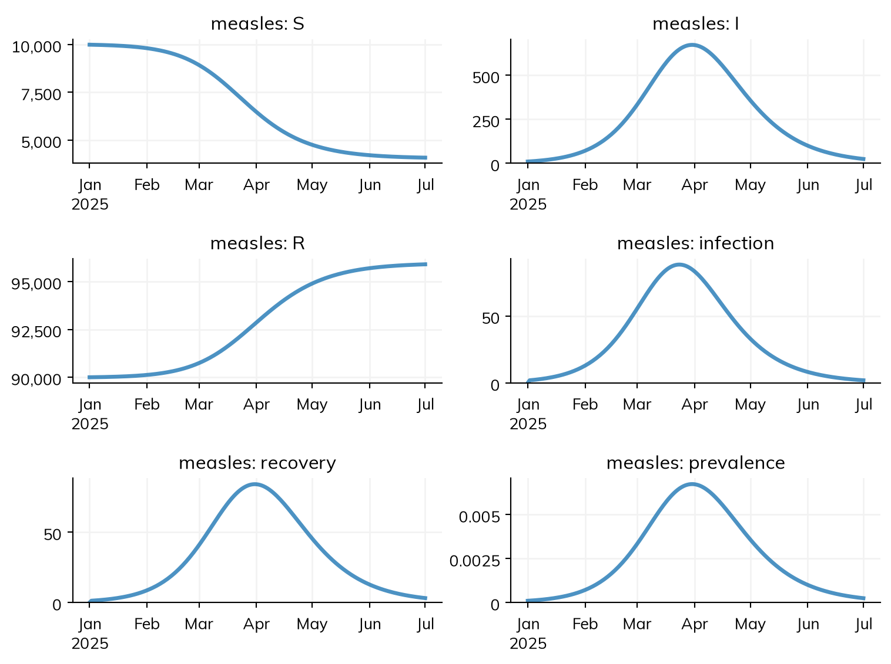
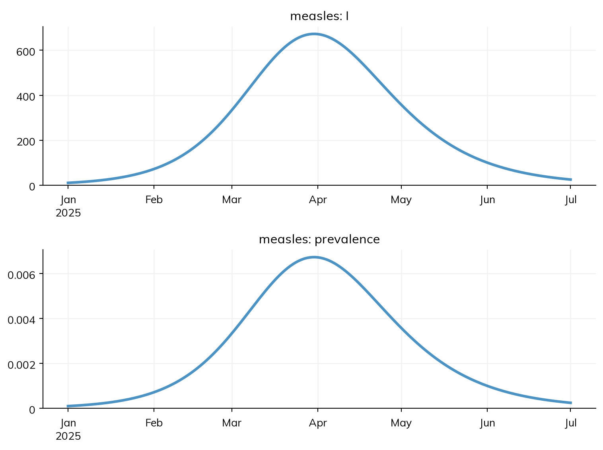
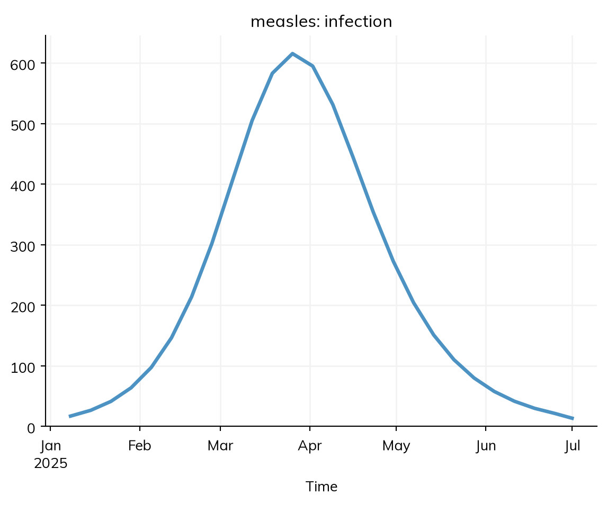
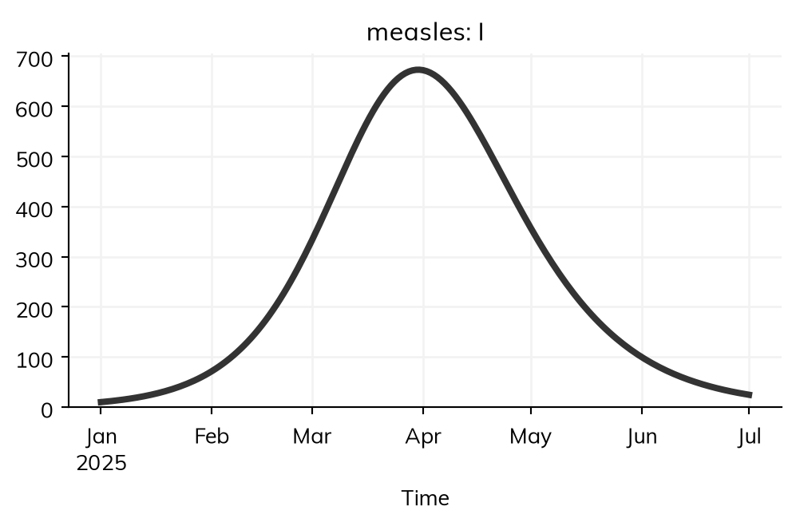
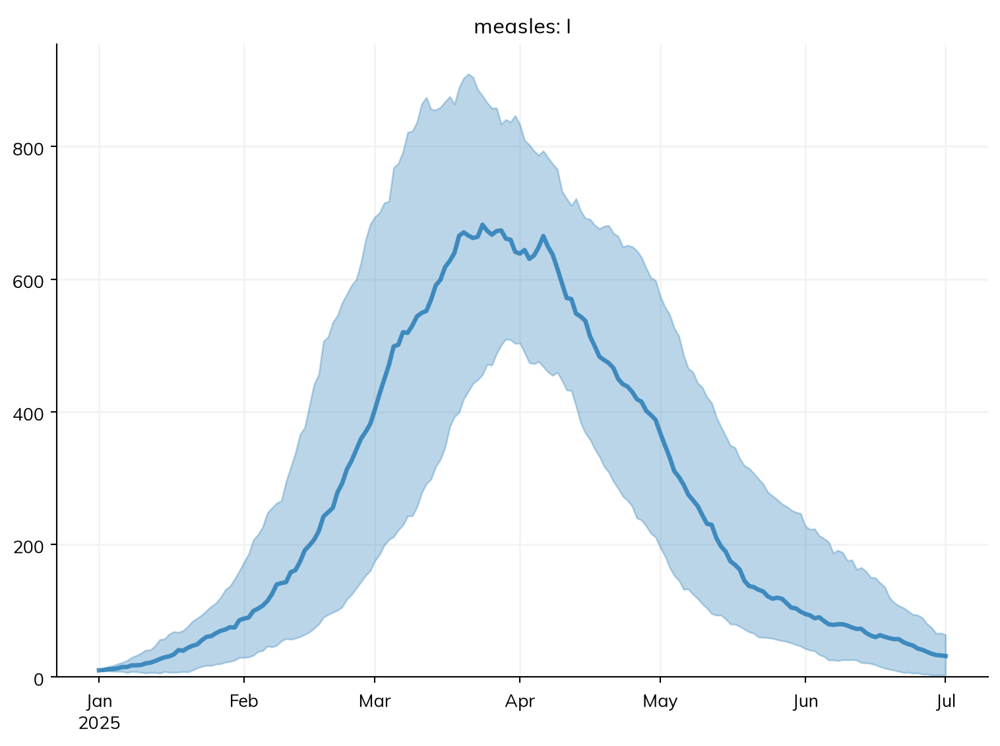
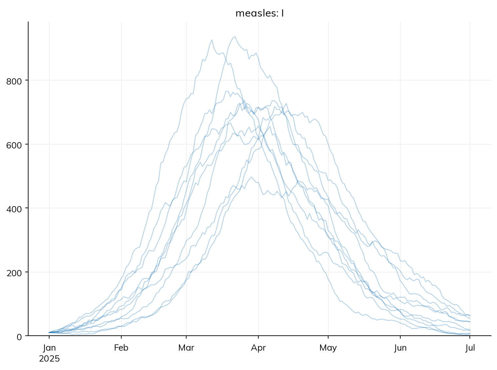
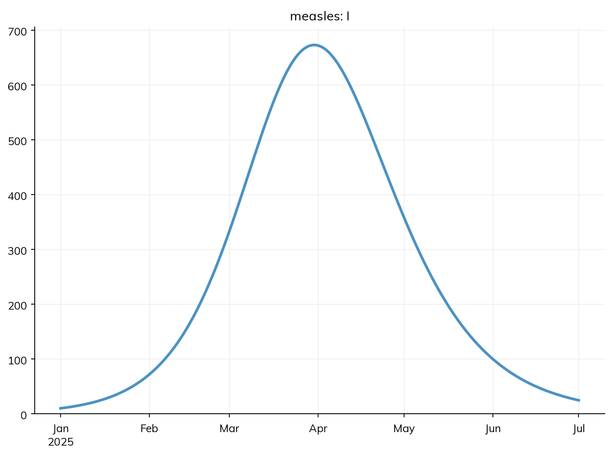
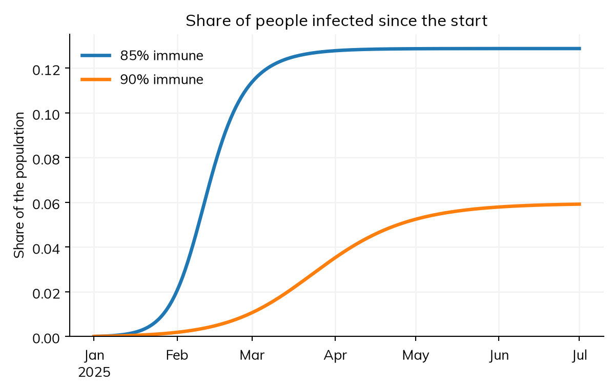

Starsim’s results know what they are (their labels, their time points, whether they are counts or shares, and any data they are compared with), so most plots take one line. This page covers plotting a sim, a module, and a single result; comparing scenarios and many runs; choosing what to plot; styles and fonts; saving figures; and falling back to Matplotlib for anything else. For what the results themselves are, see Results.
The example is the measles model of the other pages, in a town of 100,000 people in which most people are already immune, so that the outbreak is slow enough to see its shape:
import starsim as ssdef make_measles(immune=0.9): S, I, R = ss.states('S I R') infection = S >> I @1.9*I # β = 1.9 per day recovery = I >> R @ ss.days(8) # Infectious for 8 days on average prevalence = I/(S + I + R) # The share of people infectiousreturn ss.Disease(infection, recovery, prevalence, init=dict(R=immune), init_n=dict(I=10), name='measles')sim = ss.Sim(make_measles(), total_pop=100_000, start='2025-01-01', stop='2025-07-01', verbose=0)sim.run()sim.plot()
Starsim kernels: Rust, OUT OF DATE (built before its source last changed, so results may be wrong): run "./build" in starsim/solvers/rust/

Plotting a sim
sim.plot() plots every result that is plotted by default, each in axes of its own, labeled and dated from the results. The sim’s own results that never change (such as the number alive, in a model with no births or deaths) are left out; show_skipped=True includes them, and any result whose auto_plot is False.
What to plot is given by name, as the first argument:
Argument
Plots
None (the default)
Every result plotted by default, each in its own axes
The results in an inner list together in one axes, with a legend
A name that matches no result is an error that lists the names there are. Put together only results that are the same kind of quantity on a similar scale. Here the two flows, infections and recoveries (people per day), share one axes, and the number infectious (a stock: people) has its own:
New infections rise above recoveries while the outbreak grows, and fall below them once it is past its peak, which is when the number infectious is highest.
A module plots its own results with plot(), which by default puts its states together in one axes: 'states' (the default), 'flows' (each transition’s flow, in axes of its own), 'all', or the names of results, each argument in its own axes and a list of names together:
sim.diseases.measles.plot('I', 'prevalence') # Two axes: the number and the share infectious

A model run over years can be plotted as yearly values with annualize=True, which adds up each result by its kind: the total of a flow over each year, the value of a stock at its end, and a ratio worked out again from its parts. If the sim has data (see Outcomes), sim.plot() shows it as points with the result of the same name, with a flow summed over each period of the data, as a fit compares them; show_data=False leaves it out.
Plotting results
A single result plots itself, with its label as the title:
res = sim.results.measlesres.infection.resample('week').plot() # New infections in each week

The same goes for anything made from a result: a result resampled to weeks or months (resample()), one group of a stratified result (select(age='0-14')), and one series per group (by('age')), which plots every group in one axes with a legend. A result with several columns plots one line per column. See Results for these.
Each plotting function takes the common Matplotlib settings by name, and passes them on to the right place: color, lw (line width), ls (line style), alpha, and marker for the lines; figsize and dpi for the figure; font and fontsize for the text; and data_color, data_size, and data_alpha for the data points. Anything else can be given as a dict: plot_kw= is passed to plt.plot(), fig_kw= to plt.figure(), data_kw= to plt.scatter(), and legend settings such as loc. A setting that isn’t recognized is an error listing the valid ones.
res.I.plot(color='k', lw=3, figsize=(6, 3))

Comparing scenarios and runs
Sims run together, with ss.parallel() or ss.MultiSim, plot together: each result is one axes, with a line for each scenario, labeled by the sims’ labels. Here is the outbreak with 90% of people immune, against 85%:
With more people susceptible (R = 2.3 at the start, instead of 1.5), the outbreak is much faster and larger. The many runs of a stochastic model are plotted as their median at each time point, with a band holding 95% of the runs; lines=True plots every run instead:
runs = sim.run(solver='binomial', n_runs=10)runs.plot('measles.I') # The median and the range of 95% of the runsruns.plot('measles.I', lines=True) # Every run


The band says how much chance alone changes the course of the outbreak: the date of the peak varies by several weeks between runs. See Scenarios for running scenarios and many runs, and Results for their summaries.
Styles and fonts
Starsim’s plots use its own style by default ('starsim'), with the Mulish font that comes with Starsim. A plot can use another with style=: 'simple', 'fancy', or any of Matplotlib’s styles, such as 'seaborn-v0_8-whitegrid' or 'ggplot'. Fonts are given with font=: Starsim also comes with Raleway and Rosario, and font='sans-serif' uses Matplotlib’s default font. Here is the same plot in the default style and in Matplotlib’s 'ggplot' style:
To change the style of every plot, set it once: ss.options(style='simple'). To use Starsim’s style for plots of your own, use ss.style() in a with block (below).
Saving figures
Outside Jupyter (in a script), a plotting function returns the figure, which is saved with Matplotlib’s savefig(). Give do_show=False so that the figure isn’t shown first:
In Jupyter, a plotting function shows the figure and returns nothing, so that the figure isn’t displayed twice. filename= saves the figure as well as showing it, and do_show=False returns the figure without showing it, to change or save it yourself:
sim.plot('measles.I', filename='my-measles.png') # Shown, and savedfig = sim.plot('measles.I', do_show=False) # Returned, not shownfig.savefig('my-measles.png', dpi=150)

Outside Jupyter, the figure is always returned, and shown as ss.options.show says (ss.options(show=False) stops the plotting functions from showing it). A figure or axes given with fig= or ax= are yours, so they are not shown (unless do_show=True), and more can be plotted into them: fig = res1.plot(do_show=False), then res2.plot(fig=fig). log=True gives the y axes a log scale.
Falling back to Matplotlib
Anything Starsim doesn’t plot can be plotted with Matplotlib from the results, since a result is an array with its time points (res.I.timevec, res.I.values). Starsim’s plotting functions also take fig= (to plot into an existing figure) and ax= (for a single result, into existing axes), so that a figure of your own can mix the two. ss.style() applies Starsim’s style (or another) to plots of your own, and sc.commaticks() from Sciris puts commas in large numbers on an axis. Here the share of people who have been infected (the attack rate) is compared with the share still susceptible, in the two scenarios:
import matplotlib.pyplot as pltwith ss.style(): fig, ax = plt.subplots(figsize=(7, 4))for label, scenario in scenarios.items(): res = scenario.results.measles attack = res.infection.cum /100_000# Infected since the start, as a share of everyone ax.plot(res.infection.timevec, attack, label=label) ax.set_title('Share of people infected since the start') ax.set_ylabel('Share of the population') ax.set_ylim(bottom=0) ax.legend() plt.show()

The results are also tables: res.to_df() gives a dataframe, which can be plotted with pandas or seaborn, and msim.to_df(quantiles=[0.025, 0.5, 0.975]) gives the quantiles of every result across runs, in long form, for a plotting library that works with tables.
Other plots
Besides results over time, Starsim plots these:
Plot
What it shows
disease.diagram()
A declared disease’s states and transitions, as a Mermaid flowchart (Writing models)
sim.people.plot(), sim.people.plot_ages()
Agents’ attributes, as histograms; the age pyramid (People and agents)